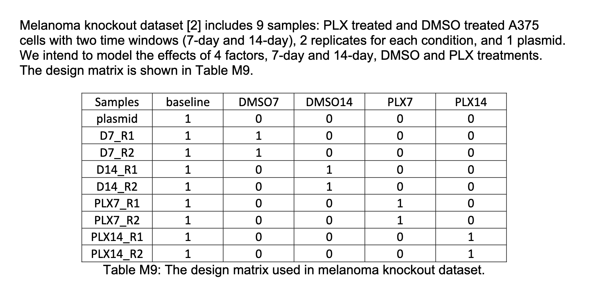
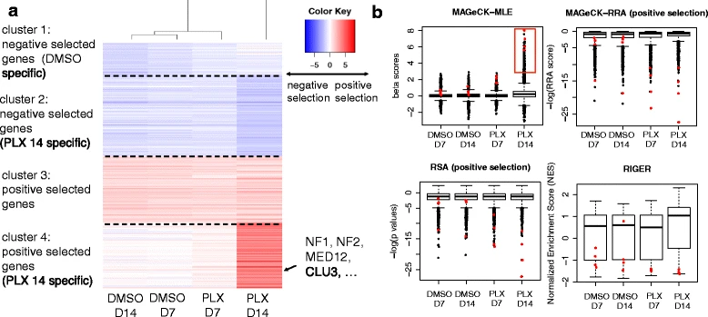

| sample | condition | g1 | g2 | g3 |
|---|---|---|---|---|
| a1 | A | 13 | 1004 | 955 |
| a2 | A | 14 | 1025 | 907 |
| b1 | B | 283 | 303 | 330 |
| b2 | B | 311 | 313 | 307 |
MAGeCK-MLE: Essential Gene Detection
For some background, CRISPR https://www.broadinstitute.org/what-broad/areas-focus/project-spotlight/questions-and-answers-about-crispr is a technology for gene editing (i.e. modifying selected parts of DNA). It consists of guiding RNA (gRNA), which both recognizes the target DNA sequence, and is also itself a target for the CRISPR-associated (cas) nuclease, which forms a ribonucleoprotein with the gRNA and performs a double-strand break on the DNA. This can result in a knockout or a knock-in of a gene.
Part of the use of CRISPR technologies is in the detection of essential genes within specific conditions.
One algorithm for doing this is the MAGeCK-MLE algorithm. This algorithm, using count data for all samples and genes, as well as a design matrix that establishes the various conditions of the gene, determines the a “gene selection score” for each that reflect how much each condition is selected for each gene.Let’s look at a toy example.
Toy Example
Say your data consists of 4 samples, 3 genes and 2 conditions (A and B). After read mapping you will have a count table,
And we also have a design matrix that specifies how each sample and each condition are related:
| sample | d0 | d1 | d2 |
|---|---|---|---|
| a1 | 1 | 1 | 0 |
| a2 | 1 | 1 | 0 |
| b1 | 1 | 0 | 1 |
| b2 | 1 | 0 | 1 |
Each count \(x\) we will model using a negative binomial distribution consisting of:
\[ x \sim NB(u,\alpha) \] where \(u=sq\) with \(s=\frac{x}{\hat{x}}\) a size factor (\(\hat{x}\) is the geometric mean for the sample), and \(q\) reflects the design as follows:
| sample | condition | g1 | g2 | g3 | g1_s | g2_s | g3_s | g1_sq | g2_sq | g3_sq |
|---|---|---|---|---|---|---|---|---|---|---|
| a1 | A | 13 | 1004 | 955 | 0.21 | 1.80 | 1.75 | \[0.21e^{\beta_{1,0}+\beta _{1,1}}\] | \[1.8e^{\beta_{2,0}+\beta _{2,1}}\] | \[1.75e^{\beta_{3,0}+\beta _{3,1}}\] |
| a2 | A | 14 | 1025 | 907 | 0.22 | 1.83 | 1.67 | \[0.22e^{\beta_{1,0}+\beta_{1,0}}\] | \[1.83e^{\beta_{2,0}+\beta_{2,1}}\] | \[1.67e^{\beta_{3,0}+\beta_{3,1}}\] |
| b1 | B | 283 | 303 | 330 | 4.47 | 0.54 | 0.61 | \[4.47e^{\beta_{1,0}+\beta_{1,2}}\] | \[0.54e^{\beta_{2,0}+\beta_{2,2}}\] | \[0.61e^{\beta_{3,0}+\beta_{3,2}}\] |
| b2 | B | 311 | 313 | 307 | 4.92 | 0.56 | 0.56 | \[4.92e^{\beta_{1,0}+\beta_{1,2}}\] | \[0.56e^{\beta_{2,0}+\beta_{2,2}}\] | \[0.56e^{\beta_{3,0}+\beta_{3,2}}\] |
Finally, for counts table \(X\) and design matrix \(D\) we can calculate the likelihood as follows:
\[ \begin{aligned} P(X,D|\beta_0,\beta_1,\beta_2) &= \sum NB(x|u,\alpha) \\ &= \sum NB(9|0.18e^{\beta0+\beta1},\alpha) + \ldots + \sum NB(278|0.51e^{\beta0+\beta2},\alpha) \end{aligned} \] where \(\alpha\) is as defined in the paper and this can be estimated using maximum likelihood. Figure 1 shows a scatter plot of the likelihood estimates for gene 1 as a function of various values of \(\beta_0\) and \(\beta_1\) for gene1.
{kind=link}
Mathematical Description
Following the notation and description from (Li et al. 2015):
Li, Wei, Johannes Köster, Han Xu, Chen-Hao Chen, Tengfei Xiao, Jun S. Liu, Myles Brown, and X. Shirley Liu. 2015. “Quality Control, Modeling, and Visualization of CRISPR Screens with MAGeCK-VISPR.” Journal Article. Genome Biology 16 (1): 281. https://doi.org/10.1186/s13059-015-0843-6.
The read count, \(x_{i,j}\) of a sgRNA \(i\) targeting gene \(g\) in sample \(j\) is modeled with the Negative Binomial distribution,
\[ x_{i,j} \sim NegBin(\mu_{i,j},\alpha_i) \]
Note that this distribution is commonly used for gene counts as it allows a different mean and a different variance. The mean itself is modeled as:
\[ \mu_{i,j}=s_j q_{i,j} \] Where \(s_j\) is a size factor accounting for the sequencing depth of the sample and is calculated as the number of counts divided by the geometric mean of the samples,
\[ s_j = \left( \frac{x_{i,j}}{\prod_{k=1}^{J}{x_{i,k}}} \right)^{(1/J)} \] On the other hand, \(q_{i,j}\) corresponds to a linear combination of effects coming from the various conditions (drug types, cell types, etc) and they are specified as :
\[ \begin{equation} \begin{cases} log(q_{i,j}) = \beta_0 + \sum_r d_{j,r} \beta_{g,r} & \text{if } \pi_i=1 \\ log(q_{i,j}) = \beta_0 & \text{if } \pi_i=0 \end{cases} \end{equation} \]
where \(d_{j,r}\) are elements of the design matrix. See example below. For \(\beta>0\) \(g_{i,r}\) is positively selected and \(\beta<0\) is negatively selected in condition \(g\) for gene \(i\). \(\beta_0\) is the initial sgRNA abundance measured in plasmid.
Ultimately, we want to maximize the likelihood, for a given set of counts \(X=x_1 \ldots x_N\), genes \(G=g_1 \dots g_G\), samples \(S=s_1 \ldots s_S\) and design matrix \(D\) we want to find the values of the parameters \(\beta=\beta_0 \dots \beta_r\):
\[ P(x_{i,j}=x|\beta_0,\{\beta\},\pi_1,\pi_0) = \prod_{j=1}^J \left( P(x_{i,j}|\pi_i=0)P(\pi_i=0)+P(x_{i,j}|\pi_i=1)P(\pi_i=1) \right) \] ### Example
So let’s use the example of @RN81, all all the figures below are from that paper. In this case the design matrix would be something like this:

Therefore, for each gene \(g\) we would have the “gene essentiality scores” \(\beta_{g,0}\), \(\beta_{g,1}\), \(\beta_{g,2}\), \(\beta_{g,3}\), \(\beta_{g,4}\) which would tell us how strongly this condition is present on the gene.And we can see the results in the following figure:

On Fig4.a we see each of the conditions on the x-axis and the genes on the y-axis, clustered into four groups.